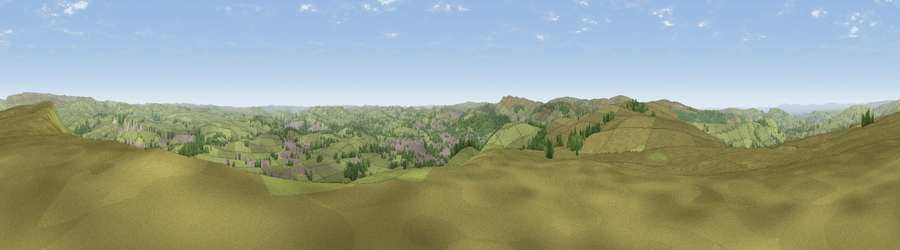

Black Edge - South Top
#8050 in England · top 8% of its area beats it · near Dove HolesThe view, rendered

A 360° render of this exact spot computed from the terrain model, tree cover and land cover — summer colours, afternoon light, calibrated against photographs of famous viewpoints. Real trees, hedges and buildings will differ in detail.
The panorama
Grey silhouette: terrain skyline in each direction (720 bearings, Earth curvature and refraction included). Dashed green: skyline with trees (+15 m) and buildings (+8 m) as obstacles. Blue strip: how far the ground is visible on each bearing.
Where the view opens
Wedge length = distance to the farthest visible ground on that bearing (vegetation-aware). Rings at 10, 25 and 50 km.
What fills the view
87% grassland · 8% woodland · 4% built-up
Angular shares of the visible panorama (visual magnitude), not map area. Landscape diversity 0.21 (0–1 Shannon).
Key numbers
More beautiful places nearby
The staircase of upgrades: each row has a higher view potential than everything closer. Driving times are estimates from straight-line distance, calibrated against real road routing — check an actual route before setting out.
| Place | Direction | Drive | Score |
|---|---|---|---|
| Combs Head - North West Top | W · 2 km | ~6 min | 68.2 |
| Viewpoint near Burbage | SSW · 6 km | ~13 min | 69.2 |
| Viewpoint near Kettleshulme | W · 6 km | ~14 min | 72.5 |
| Cats Tor | W · 6 km | ~14 min | 72.8 |
| Lord's Seat | NE · 9 km | ~17 min | 73.1 |
| Viewpoint near Meerbrook | SSW · 14 km | ~25 min | 73.5 |
| Viewpoint near Thornhill | NE · 19 km | ~32 min | 74.1 |
| Viewpoint near Timbersbrook | SW · 20 km | ~34 min | 74.4 |
53.28431, -1.91109 · source: osm peak · position refined by local search. Computed location — check access rights before visiting.